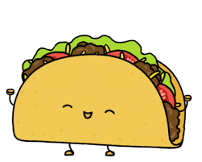

Vegan Crispy Potato and Zucchini Tacos

What are taters doing in a taco, you ask? Everything, we say! Crispy, roasted
potatoes and zucchini are the perfect way to make taco night meatless. Load those deliciously spiced
veggies into steamy flour tortillas, then enlist the help of some seriously satisfying toppings
bring it home: tangy pico de gallo, vegan crema, and hot sauce.
Ingredients
Potatoes (12 oz.)
- Zucchini (1 shaft)
- Cilantro (1/4 oz.)
- Southwest Spice Blend (1 tbsp)
- Garlic Powder (1 tbsp)
- Pico de Gallo (4 oz.)
- Hot Sauce (2 tsp)
- Flour Tortillas (6 of em)
- Blue Tortilla Chips
Steps
Adjust rack to top position and preheat oven to 425 degrees. Wash and dry produce.
- Dice potatoes to 1/2 inch pieces; trim and halve zucchini, the cut crosswise into
1/2 inch thick half-moons.
- Roughly chop cilantro.
- Toss taters and zucc on baking sheet with a drizzle of olive oil, Southwest Spice blend,
garlic powder, salt, and pepper.
- Roast on top rack until browned and tender, 18-20 minutes.
- Meanwhile, in a small bowl combine crema and cilantro. Season with salt and pepper.
- Once veggies are done roasting, wrap tortillas in damp paper towels and microwave
until warm and pliable, 30 secs.
- Divide tortillas between plates and fill with roasted veggies. Top with pico de gallo, drizzle
with cilantro crema and douse in hot sauce.
- Serve with chips

Back to Home